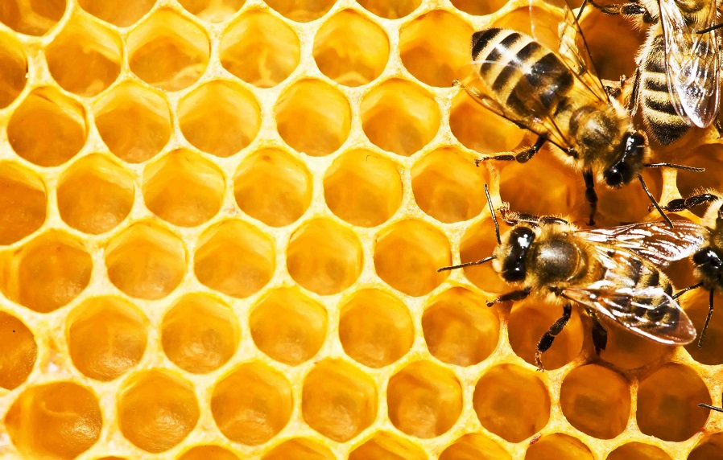

Пчеловодство
Пчеловодство с нуля: первые шаги
Любое мероприятие должно приносить удовольствие. Однако если это будет приносить еще и прибыль, то его эффект будет значительно выше. Коммерческие основы пчеловодства не должны отличаться от бытовых, кроме больших объемов и наличия системы сбыта. Следуя таким простым указаниям, вы сможете производить мед как для собственных нужд, так и для реализации. Прибыльность – это один из лучших показателей правильной организации и делового подхода. Можно использовать готовые бизнес планы, а также сделать все расчеты и приготовления самостоятельно. В любом случае, для успеха в этой области вам нужно обладать достаточными знаниями и погрузиться в тему с головой. Лучше использовать опыт профессионалов, которые советуют делать все пошагово, не отходя от основных принципов. Таким образом, для обустройства своей пасеки необходимо следовать таким шагам:
- Выяснить медоносные ресурсы региона.
- Закупить ульи (с запасом) и другое оборудование.
- Рассчитать количество семей, которое можно разместить.
- Разработать план пасеки по годам.
- Выбрать наиболее обеспеченное медоносными растениями место.
- Посеять дополнительные медоносные растения.
- Соорудить пасечные строений (зимовник, пасечный дом).
- Приобрести вощину.
- Закупить семьи.